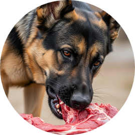
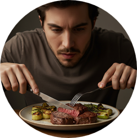
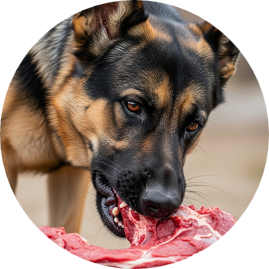
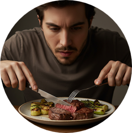
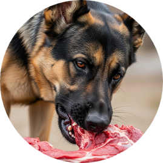
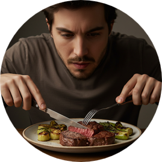
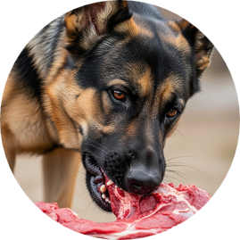
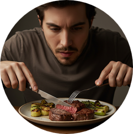

Hospedador Intermediario
Hospedador Definitivo
 







| Parásito | Tamaño del adulto (cm) | Hospedador definitivo | Hospedador intermediario | Forma juvenil | Localización de la forma juvenil |
|---|---|---|---|---|---|
| T. hydatigena | 15-60 | Perro | Ovino, bovino, cerdo | Cysticercus tenuicollis | Cavidad peritoneal, mesenterio, superficie hígado |
| T. ovis | 110 | Perro | Ovino | Cysticercus ovis | Músculos |
| T. pisiformis | 200 | Perro-gato | Conejo | Cysticercus pisiformis | Cavidad abdominal, hígado |
| T. taeniaeformis | 15-60 | Gato | Ratón | Cysticercus (strobilocercus) fasciolaris | Hígado |
| T. saginata | 480 | Hombre | Bovino | Cysticercus bovis | Corazón, músculos, masetero, lengua, etc. |
| T. solium | 350 | Hombre | Cerdo | Cysticercus cellulosae | Músculos, corazón, diafragma |
| T. multiceps | 40-100 | Perro | Ovino, bovino, hombre | Coenurus cerebralis | Sistema nervioso central, médula espinal |
| E. granulosus | 0.3 - 0.6 | Perro | Ovino, bovino, hombre | Quiste hidatidico | Vísceras, músculos, etc. |